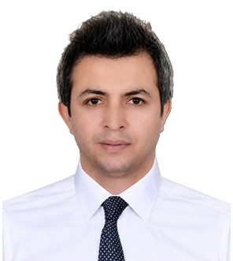

Profil
Oruc Allahverdiyev nəşrlərdə Yunusoğlu soyadı ilə çıxır. 2023-cü ilin dekabrından Bolu Abant İzzet Baysal Universitetində tibbi farmakologiya üzrə dosentdir. 2014-cü ilin oktyabrında İstanbul Universitetində tibbi farmakologiya üzrə PhD dərəcəsi alıb. Dissertasiya siçovullarda morfinlə şərtlənmiş yer üstünlüyündə vareniklin və bupropionu müqayisə edir. Elmi rəhbər Ahmet Gökhan Akkan-dır. Farmakologiya və klinik farmakologiya üzrə magistr dərəcəsini 2009-cu ilin iyulunda, əczaçılıq dərəcəsini 2006-cı ilin iyulunda İstanbul Universitetində alıb. 2014–2021-ci illərdə Van Yüzüncü Yıl Universitetində köməkçi professor olub.
İş təcrübəsi
Bolu Abant İzzet Baysal Universiteti, Türkiyə
dekabr 2023–hazırdaDosent
Bolu Abant İzzet Baysal University
December 2021–2023Köməkçi professor
Tibb fakültəsi, Van Yüzüncü Yıl Universiteti, Türkiyə
2019–2021Köməkçi professor
Əczaçılıq fakültəsi, Van Yüzüncü Yıl Universiteti
2014–2019Köməkçi professor
Təhsil
PhD
October 2014Tibbi farmakologiya. Morfinlə şərtlənmiş yer üstünlüyündə vareniklin və bupropion. Elmi rəhbər: Ahmet Gökhan Akkan
İstanbul Universiteti, Türkiyə
MSc
July 2009Farmakologiya və klinik farmakologiya. Biperiden, morfin mükafatı və haloperidol. Elmi rəhbər: Nurhan Enginar
İstanbul Universiteti
Əczaçılıq üzrə bakalavr
July 2006Əczaçılıq fakültəsi, İstanbul Universiteti
Alt dərəcə
September 2017Səhiyyə sisteminin idarə edilməsi
Açıq və Distant Təhsil Fakültəsi, İstanbul Universiteti
Nəşrlər
Kitablar və dərsliklər
1. Parkinson Hastalığı "Geçmişten Geleceğe", Bölüm adı: (Parkinson Hastalığında Fitoterapi, Apiterapi ve Aromaterapi Uygulamaları) (2022)., Yunusoğlu Oruç, Bozkurt Ayşe, Özdemir Hülya, Türkiye Klinikleri Yayınevi, Editör: Prof. Dr. Hülya ÖZDEMİR, Basım sayısı:1, Sayfa Sayısı 94, ISBN:978- 625401-682-0, Türkçe (Bilimsel Kitap)
2. Academic Studies in Health Sciences, Bölüm adı: (The effects of ketogenic diet on gut microbiota) (2021)., Berköz Mehmet, Yunusoğlu Oruç, Duvar Publishing, Editör:Dilek ATIK, Nuray KILIC, Basım sayısı:1, Sayfa Sayısı 213, ISBN:978-625-75xx-xx-x, İngilizce (Bilimsel Kitap)
3. Sağlık Bilimleri İçin Temel Farmakoloji, Bölüm adı: (İlaç Bağımlılığı ve Kötüye Kullanımı) (2021) Yunusoğlu Oruç, Ankara Nobel Tıp Kitabevleri, Editör: Zeliha Yazıcı, Burak Önal, Basım sayısı:1, Sayfa Sayısı 342, ISBN:2222, Türkçe (Ders Kitabı)
4. Geriatrik Onkoloji, Bölüm adı:(Geriatrik Onkolojide İlaç Etkileşimleri ve Klinik Önemi) (2021)., Yunusoğlu Oruç, Akademisyen Kitabevi, Editör:Ali Murat Sedef, Baran Akagündüz, Basım sayısı:1, Sayfa Sayısı 571, ISBN:9786257679794, Türkçe(Bilimsel Kitap)
Rəylənmiş (peer-reviewed) jurnal məqalələri
1. Ergul Erkec, O., Yunusoglu, O., & Huyut, Z. (2024). Evaluation of repeated ghrelin administration on seizures, oxidative stress and neurochemical parameters in pentyleneterazole induced kindling in rats. International Journal of Neuroscience, 134(4), 420-428.
2. Yalniz, Y., Yunusoğlu, O., Berköz, M., & Demirel, M. E. (2024). Effects of fisetin on ethanol-induced rewarding properties in mice. The American Journal of Drug and Alcohol Abuse, 1-9.
3. Barzani, H. A., Ali, H. S., Yunusoğlu, O., & Yardım, Y. (2024). Sensing ivacaftor accomplished using the squarewave voltammetric technique with the assistance of a cationic surfactant on a boron-doped diamond electrode. Diamond and Related Materials, 110932.
4. Yunusoğlu Oruç (2023). Resveratrol inhibits nicotine-induced conditioned place preference in mice. Brazilian Journal of Pharmaceutical Sciences, 59, Doi: 10.1590/s2175-97902023e20883
5. Akünal Türel Canan, Yunusoğlu Oruç (2023). Oleanolic acid suppresses pentylenetetrazole-induced seizure in vivo. International Journal of Environmental Health Research, 33, Doi: 10.1080/09603123.2023.2167947
6. İzem Özok Hande, Keskin Ertuğrul, Yunusoğlu Oruç, Yardim Yavuz (2023). The First Electroanalytical Study Of Umifenovir (Arbidol) Used As A Potential Antiviral Drug For The Treatment of SARS-CoV-2: A Voltammetric Quantification On The Boron-Doped Diamond Electrode By Using Anionic Surfactant Media. The Electrochemical Society, 170, Doi: 10.1149/1945-7111/acafa7
7. Yunusoğlu Oruç, Türkmen Ömer, Berköz Mehmet, Yildirim Metin, Yalin Serap (2022). In Vitro Anti-Obesity Effect of Aloe vera Extract Through Transcription Factors and Lipolysis Associated Genes. Eastern Journal of Medicine, 27(4), 519-528.
8. Yunusoğlu Oruç, Köse Çağla, Shahzadi Andleeb, Özyazgan Sibel, Demir Bülent, Önal Burak, Akkan Ahmet Gökhan (2022). Ameliorative effects of varenicline and bupropion on morphine-induced conditioned place preference in rats. Archives of Current Medical Research, 3(3), 214-226., Doi: 10.47482/acmr.1159319
9. Özdemir Hülya, Yunusoğlu Oruç (2022). Investigation of the pharmacological, behavioral and biochemical effects of boron on rats with rotenone-induced Parkinsons Disease. Cellular and Molecular Biology, 68, Doi:
10. Yunusoğlu Oruç, Shahzadi Andleeb, Akünal Türel Canan, Demirkol Muhammed Hamdi, Berköz Mehmet, Akkan Ahmet Gökhan (2022). Investigation of the pharmacological potential of myricetin on alcohol addiction in mice. Journal of Research in Pharmacy, 26(4), 722-733., Doi: 10.29228/jrp.170
11. Yunusoğlu Oruç, Köse Çağla, Shahzadi Andleeb, Özyazgan Sibel, Demir Bülent, Önal Burak, Akkan Ahmet Gökhan (2022). The Effects of Bupropion and Varenicline on Morphine Withdrawal Syndrome in Rats. Abant Tıp Dergisi, 11(2), 231-242., Doi: 10.47493/abantmedj.1120849
12. Shahzadi Andleeb, Yunusoğlu Oruç, Karabulut Enes, Sonmez Haktan, Yazici Zeliha (2022). Influence of Selective Dopamine Agonist Ropinirole on Conditioned Place Preference and Somatic Signs of Morphine Withdrawal in Rats. Frontiers in Behavioral Neuroscience, 16, 1-10., Doi: 10.3389/fnbeh.2022.855241
13. Ekici Abdurrahman, Gürbüz Esra, Berköz Mehmet, Türkmen Ömer, Başbuğan Yildiray, Yunusoğlu Oruç (2022). Investigation of the impact of antiparasitic drug moxidectin on the rewarding effects of alcohol. General physiology and biophysics, 41(3), 245-253., Doi: 10.4149/gpb_2022014
14. Yunusoğlu Oruç (2022). Rewarding effect of ethanol-induced conditioned place preference in mice: Effect of the monoterpenoid linalool. Alcohol, 98, 55-63., Doi: 10.1016/j.alcohol.2021.11.003
15. Yunusoğlu Oruç (2022). Evaluation of the effects of quercetin on the rewarding property of ethanol in mice. Neuroscience Letters, 768, 1-7., Doi: 10.1016/j.neulet.2021.136383
16. Ergül Erkeç Özlem, Yunusoğlu Oruç, Huyut Zübeyir (2022). Evaluation of repeated ghrelin administration on seizures, oxidative stress and neurochemical parameters in pentyleneterazole induced kindling in rats. Int J Neurosci, Doi: 10.1080/00207454.2022.2107516.
17. Berköz Mehmet, Ünal Seda, Karayakar Fahri, Yunusoğlu Oruç, Özkan Yilmaz Ferbal, Özlüer Hunt Arzu, Aslan Ali (2021). Prophylactic effect of myricetin and apigenin against lipopolysaccharide-induced acute liver injury. Molecular Biology Reports, 48(9), 6363-6373., Doi: 10.1007/s11033-021-06637-x
18. Yunusoğlu Oruç (2021). Resveratrol impairs acquisition, reinstatement and precipitates extinction of alcoholinduced place preference in mice. Neurological Research, 43, 985-994., Doi:
19. 1080/01616412.2021.1948749
20. Yunusoğlu Oruç (2021). Linalool attenuates acquisition and reinstatement and accelerates the extinction of nicotine-induced conditioned place preference in male mice. The American journal of drug and alcohol abuse, 47(4), 422-432., Doi: 10.1080/00952990.2021.1898627
21. Allahverdiyeva Shabnam, Yunusoğlu Oruç, Yardim Yavuz, Şentürk Zühre (2021). First electrochemical evaluation of favipiravir used as an antiviral option in the treatment of COVID-19: A study of its enhanced voltammetric determination in cationic surfactant media using a boron-doped diamond electrode. Analytica Chimica Acta, 1159, 1-12., Doi: 10.1016/j.aca.2021.338418
22. Keskin Ertuğrul, Allahverdiyeva Shabnam, İzem Özok Hande, Yunusoğlu Oruç, Yardim Yavuz (2021). Voltammetric quantification of the anesthetic drug propofol (2,6-diisopropylphenol) in the pharmaceutical formulations on a boron-doped diamond electrode. Journal of the Serbian Chemical Society, 86(8), 711-724. (Ya
23. Berköz Mehmet, Yalin Serap, Özkan Yilmaz Ferbal, Özlüer Hunt Arzu, Kro?Niak Miros?Aw, Francik Renata, Yunusoğlu Oruç, Adıyaman Abdullah, Gezici Hava, Yiğit Ayhan, Ünal Seda, Volkan Davut, Yildirim Metin (2021). Protective effect of myricetin, apigenin, and hesperidin pretreatments on cyclophosphamide-induced immunosuppression. Immunopharmacology and Immunotoxicology, 43(3), 353-369., Doi:
24. 1080/08923973.2021.1916525
25. Berköz Mehmet, Akkus Yakup, Yunusoğlu Oruç (2021). Investigation of the Effects of MK-801 on Oxidative Stress, Inflammation and Ghrelin Levels in Brain Tissue in Convulsions Caused by Scopolamine Administration and Feeding in Starving Mice. International Journal of Scientific and Technological Research, Doi:
26. Berköz Mehmet, Özkan Yilmaz Ferbal, Özlüer Hunt Arzu, Yildirim Metin, Yunusoğlu Oruç, Aslan Ali (2021). Rosa Canina L. Ethanolic Extract Induces The Anti-Proliferative And Apoptosis Potential in Mcf-7 And Mda- Mb468 Cell Lines. Fresenius Environmental Bulletin, 28, 3718-3723.
27. Yunusoğlu Oruç, Demirkol Muhammed Hamdi, Berköz Mehmet, Sağmanligil Vedat, Oto Gökhan, Özdemir Hülya (2021). The effects of moxidectin nicotine-conditioned cue on nicotine-seeking behavior in mice. International Journal of Advanced and Applied Sciences, 8, Doi: 10.21833/ijaas.2021.12.014
28. Allahverdiyeva Shabnam, Keskin Ertuğrul, Talay Pinar Pinar, Yunusoğlu Oruç, Yardim Yavuz, Şentürk Zühre (2020). Electroanalytical investigation and determination of hepatitis C antiviral drug ledipasvir at a non-modified boron-doped diamond electrode. Diamond and Related Materials, 108, 1-9., Doi: 10.1016/j.diamond.2020.107962
29. Dzhafar Sara Sami, Yunusoğlu Oruç (2020). Socio-Economic Life in Turkey and Western Europe after COVID
30. Dzhafar Sara Sami, Dalar Abdullah, Mükemre Muzaffer, Ekin Suat, Yıldız Damla, Yunusoğlu Oruç (2020). Phytochemical Profile and in vitro and in vivo Anticonvulsant and Antioxidant Activities of Epilobium hirsutum. International Journal of Secondary Metabolite, 63-76.
31. Yunusoğlu Oruç, Allahverdiyeva Shabnam,Yardim Yavuz,Şentürk Zühre (2020). A Simple Approach to Simultaneous Electroanalytical Quantification of Acetaminophen and Tramadol Using a Boron-doped Diamond Electrode in the Existence of Sodium Dodecyl Sulfate. Electroanalysis, 32(2), 429-434.
32. Yunusoğlu Oruç, Dzhafar Sara Sami (2020). The rationale for current pharmacotherapy of COVID-19. Eastern Journal Of Medicine, 25, 468-476., Doi: 10.5505/ejm.2020.29053
33. Berköz Mehmet,Yildirim Metin,Yalin Serap,İlhan Mert,Yunusoğlu Oruç (2020). Myricetin inhibits angiotensin converting enzyme and induces nitric oxide production in HUVEC cell line. General physiology and biophysics, 39(3), 249-258.
34. Allahverdiyeva Shabnam, Talay Pinar Pinar, Keskin Ertuğrul, Yunusoğlu Oruç, Yardim Yavuz, Şentürk Zühre (2020). Adsorptive stripping voltammetric determination of higenamine on a boron-doped diamond electrode improved by the use of an anionic surfactant. Sensors and Actuators B: Chemical, 303, 1-8., Doi:
35. Berköz Mehmet,Yılmaz Ferbal Özkan,Hunt Arzu Özlüer,Kroniak Mirosaw,Türkmen Ömer,Yunusoğlu Oruç (2020). Roe protein hydrolysate of Alburnus tarichi induces apoptosis in breast cancer MCF-7 and MDA-MB-231 cells through a caspase-dependent pathway. General physiology and biophysics, 39(05), 449-460.
36. Yunusoğlu Oruç, Berköz Mehmet, Yardim Yavuz (2020). Çoklu Antibiyotik Direnci Gösteren Bakterilere Karşı Geliştirilen Yeni Antibiyotikler; Dalbavansin, Telavansin ve Oritavansin. Van Sağlık Bilimleri Dergisi, 45-54.
37. Kahraman Tahir, Berköz Mehmet, Yunusoğlu Oruç, Mahmood Evan Abdulkarim, Yildirim Metin, Yalin Serap (2020). Can Juniperus communis L. oil improve nephropathy in diabetic rats. Clinical and Experimental Health Sciences, 10(2), 120-124.
38. Berköz Mehmet, Kahraman Tahir, Yildirim Metin, Yiğit Muhammet Faruk, Yunusoğlu Oruç (2019). Hepatoprotectve effect on Nigella sativa L. extarct in methyl parathion exposed rats. Fresenius Environmental Bulletin, 28(10), 7079-7087.
39. Berköz Mehmet, Yildirim Metin, Mirosław Krośniak, Francik Renata, Yunusoğlu Oruç (2018). Antioxidant Activity of Different Extracts From Stalk Part Of Rhub Arb (Rheum Rhabarbarum L.). Van Sağlık Bilimleri Dergisi, 11(2), 11-15.
40. Yunusoğlu Oruç, Dzhafar Sara Sami, Berköz Mehmet, Yildirim Metin (2018). Advances in current medication and new therapeutic approaches in epilepsy. Eastern Journal Of Medicine, 23, 48-59., Doi:
41. Dalar Abdullah,Bengu Aydın Şükrü,Yunusoğlu Oruç (2018). Analysis of Phytochemical Composition and Biological Activities of Verbascum cheiranthifolium var. cheiranthifolium stem and flowers. International Journal of Secondary Metabolite, 5(3), 233-242.
42. Berköz Mehmet, Yunusoğlu Oruç, Yildirim Metin (2018). Investigation of the effect of hyperforin and hypericin on inflammatory response in RAW 264.7 macrophages. Van Medical Journal, 25, 124-131., Doi:
43. Berköz Mehmet, Yunusoğlu Oruç (2017). Punicalagin isolated from Punica granatum husk can decrease the inflammatory response in RAW 264.7 macrophages. Eastern Journal Of Medicine, 22(2), 57-64.
44. Turunç Bahar,Zengin Türkmen Asli,Yunusoğlu Oruç,Enginar Nurhan (2016). Antimuscarinic-induced convulsions in fasted animals after food intake: evaluation of the effects of levetiracetam, topiramate and different doses of atropine. Naunyn-Schmiedebergs Archives Of Pharmacology, 57(62)
45. Yunusoğlu Oruç, Zengin Türkmen Asli,Nurten Asiye,Enginar Nurhan (2015). Spontaneous withdrawal in intermittent morphine administration in rats and mice: effect of clonidine coadministration and sex-related differences. TURKISH Journal Of Medical Sciences, 45, 1380-1389.
46. Berköz Mehmet, Yildirim Metin, Bora Gülhan, Türkmen Ömer, Yunusoğlu Oruç (2015). Effect of capsaicin on transcription factors in 3T3-L1 cell line. Eastern Journal of Medicine, 34-45.
47. Shahzadi Andleeb, Sönmez Ikbal, Yunusoğlu Oruç, Önal Burak, Kandaz Cemre, Ozyazgan Sibel Ozmen, Akkan Ahmet Gokhan, Yazici Zeliha (2014). Cardiac Troponin-I (cTnI) a Biomarker of Cardiac Injuries Induced by Doxorubicin Alone and in Combination with Ciprofloxacin, Following Acute and Chronic Dose Protocol in Sprague Dawley Rats. International Journal of Pharmacology, 10(5), 258-266.
48. Yunusoğlu Oruç, Nurten Asiye,Enginar Nurhan (2011). Assessment of rewarding and reinforcing properties of biperiden in conditioned place preference in rats. Behavioural Brain Research, 225(2), 642-645.
Konfrans məqalələri və tezisləri
1. Enginar Nurhan, Yunusoğlu Oruç, Hatipoğlu İclal (2009). Evaluation of spontaneous partial withdrawal and effect of clonidine in intermittent morphine administration in rat. 9th International Congress of the Polish Neuroscience Society (Özet Bildiri/Poster)
2. Bora Gülhan, Berköz Mehmet, Yildirim Metin, Türkmen Ömer, Yunusoğlu Oruç (2015). Effect of capsaicin on transcription factors in 3T3-L1 cell line. 11th International Symposium on Pharmaceutical Sciences (Özet Bildiri/Poster)
3. Türker Rabia Sena, Dalar Abdullah, Yunusoğlu Oruç (2015). Antiepileptic folk medicines from eastern ANATOLIA. 2nd International Conference on Natural Products Utilization:From Plants to Pharmacy Shelf (Özet Bildiri/Poster)
4. Karabulut Enes, Yunusoğlu Oruç, Shahzadi Andleeb, Yazici Zeliha (2016). Ropinirole prevents the addiction and withdrawal symptoms of morphine induced conditioned place preference in rats. 7th European Congress of Pharmacology (Özet Bildiri/Sözlü Sunum)
5. Yunusoğlu Oruç, Yaqubov Kamandar (2016). The Effects of a Ginkgo biloba extract on extinction and relapse of ethanol-induced conditioned place preference in mice. 7th European Congress of Pharmacology (Özet Bildiri/Poster)
6. Yunusoğlu Oruç, Berköz Mehmet, Yildirim Metin, Yalin Serap (2016). Ethanol extract of Cumin (Cuminum cyminum L.) seeds inhibited lipopolysaccharide-induced inflammatory responses in Raw 264.7 cells. 7th European Congress of Pharmacology (Özet Bildiri/Poster)
7. Yunusoğlu Oruç, Köse Çağla, Shahzadi Andleeb, Özyazgan Sibel, Demir Bülent, Önal Burak, Akkan Ahmet Gökhan (2016). Comparison of the effects of varenicline and bupropion on the conditioned place preference test which is induced by morphine in rats. 7th European Congress of Pharmacology (Özet Bildiri/Poster)
8. Kahraman Tahir, Aksakal Abdulbaki, Berköz Mehmet, Yildirim Metin, Shinki Gulala Ahmed Mohammed, Yunusoğlu Oruç, Yalin Serap, Türel İdris (2017). Silybum marianum ekstresinin diyabetik sıçanların serumunda immun parametrelere ve protein oksidasyonuna etkilerinin incelenmesi. 3. Uluslararası İlaç ve Eczacılık Kongresi (Özet Bildiri/Poster
9. Berköz Mehmet, Ünal Seda, Karayakar Fahri, Yunusoğlu Oruç, Özkan Yilmaz Ferbal, Özlüer Hunt Arzu, Aslan Ali (2021). Prophylactic effect of myricetin and apigenin against lipopolysaccharide-induced acute liver injury. 13th International Symposium on Pharmaceutical Sciences (ISOPS-13), 142-142. (Özet Bildiri/Sözlü Sunum)
10. Berköz Mehmet, Yunusoğlu Oruç, Özkan Yilmaz Ferbal, Özlüer Hunt Arzu, Yildirim Metin, Yalin Serap, Türkmen Ömer (2021). Chemical, antioxidant and antimicrobial properties of Alburnus tarichi roe protein hydrolysate. 13th International Symposium on Pharmaceutical Sciences (ISOPS-13), 256-256. (Özet Bildiri/Poster)
11. Karayel Beşir, Berköz Mehmet, Yunusoğlu Oruç, Kahraman Tahir (2021). Farelerde deneysel epileptik modelde propolisin beyinde asetilkolinesteraz ve oksidatif stres üzerine etkisinin araştırılması. 3. Uluslararası 23 Nisan Bilimsel Çalışmalar Kongresi, 41-41. (Özet Bildiri/Sözlü Sunum)
12. Ergül Erkeç Özlem, Huyut Zübeyir, Yunusoğlu Oruç, Kara Büşra (2020). Effects of Chronic Ghrelin Administration On IL-1, IL-6 and TNF Levels in PTZ Kindling Epilepsy Model in Rats. 4th international Congress of Turkish Neuroendocrinology Society, 30-30. (Özet Bildiri/Sözlü Sunum)
13. Yunusoğlu Oruç, Berköz Mehmet, Özkan Yilmaz Ferbal, Özlüer Hunt Arzu, Türkmen Ömer (2019). Antioxidant Activity of An Ethnobotanically Important Plant Crocus Sativus L. 3. International Conference on Agriculture, Food, Veterinary and Pharmacy Sciences, 668-668. (Özet Bildiri/Sözlü Sunum)
14. Yunusoğlu Oruç, Berköz Mehmet, Özkan Yilmaz Ferbal, Özlüer Hunt Arzu, Türkmen Ömer (2019). Antioxidant Activity of Various Extracts From Psidium Guajava. 3. International Conference on Agriculture, Food, Veterinary and Pharmacy Sciences, 667-667. (Özet Bildiri/Sözlü Sunum)
15. Türkmen Ömer, Yunusoğlu Oruç, Berköz Mehmet, Özkan Yilmaz Ferbal, Özlüer Hunt Arzu (2019). Chemical Composition, Antioxidant And Antimicrobial Effects of Acantholimon Goeksunicum. 3. International Conference on Agriculture, Food, Veterinary and Pharmacy Sciences, 670-670. (Özet Bildiri/Sözlü Sunum)
16. Berköz Mehmet, Yunusoğlu Oruç, Kroniak Mirosaw, Francik Renata (2019). Lonicera Caerulea L. Extract Protects Hepg2 Cells From Oxidative Stress Injury Induced By Hydrogen Peroxide. 3. International Conference on Agriculture, Food, Veterinary and Pharmacy Sciences, 666-666. (Özet Bildiri/Sözlü Sunum)
17. Türkmen Ömer, Berköz Mehmet, Yunusoğlu Oruç, Özkan Yilmaz Ferbal, Özlüer Hunt Arzu (2019). Phytochemical Contents And Antioxidant Properties of Pistacia Vera Fruit. 3. International Conference on Agriculture, Food, Veterinary and Pharmacy Sciences, 669-669. (Özet Bildiri/Sözlü Sunum)
18. Allahverdiyeva Shabnam, Yunusoğlu Oruç, Yardim Yavuz (2019). First Electrochemical Investigation of Usnic Acid and its Voltammetric Determination at Pencil Graphite Electrode. 3. International Conference on Agriculture, Food, Veterinary and Pharmacy Sciences, 574-574. (Özet Bildiri/Sözlü Sunum)
19. Berköz Mehmet, Kahraman Tahir, Yildirim Metin, Yunusoğlu Oruç, Yalin Serap, Saeed Karzan Mahmood, Türel İdris (2018). Attenuation of testis damage in streptozotocininduced diabetic rats by Vaccinium myrtillus L. extract. 12th International Symposium on Pharmaceutical Sciences (ISOPS-12), 342-343. (Özet Bildiri/Poster)
20. Yalin Serap, Berköz Mehmet, Kahraman Tahir, Yildirim Metin, Yunusoğlu Oruç, Saeed Karzan Mahmood, Türel İdris (2018). Investigation of the effect of Vaccinium myrtillus L. on oxidative stress in lung tissue of diabetic rats. 12th International Symposium on Pharmaceutical Sciences (ISOPS-12), 347-348. (Özet Bildiri/Poster)
21. Berköz Mehmet, Kahraman Tahir, Yildirim Metin, Yunusoğlu Oruç, Mahmood Evan Abdulkarim, Yalin Serap (2018). The Effect of Juniperus Communis L. Oil on Oxidative Stress in the Liver Tissue of Diabetic Rats. 1. International Agricultural Science Congress, 370-370. (Özet Bildiri/Sözlü Sunum)
22. Yunusoğlu Oruç, Berköz Mehmet, Kahraman Tahir, Yildirim Metin, Allahverdiyeva Shabnam, Türel İdris, Dede Semiha, Yalin Serap (2018). The Effect of Ferulago Angulata (Schlecht.) Boiss. Extract on Oxidative Stress in Kidney Tissue of Streptozotocin-Induced Diabetic Rats. 1. International Agricultural Science Congress, 377-377. (Özet Bildiri/Poster)
23. Yunusoğlu Oruç, Berköz Mehmet, Aslan Ali (2018). Glycitein Reduces the Proliferation and Adipogenesis of 3T3-L1 Preadipocytes. 1. International Agricultural Science Congress, 371-371. (Özet Bildiri/Sözlü Sunum)
24. Berköz Mehmet, Kahraman Tahir, Yildirim Metin, Yiğit Muhammet Faruk, Yunusoğlu Oruç (2018). Hepatoprotective Effect of Nigella sativa L. Extract in Methyl Parathion Exposed Rats. 1. International Agricultural Science Congress, 321-321. (Özet Bildiri/Poster)
25. Yunusoğlu Oruç, Berköz Mehmet, Yildirim Metin, Aslan Ali, Yalin Serap (2018). Antioxidant activity of sweet orange oil. International Erdemli Symposium, 67-70. (Tam Metin Bildiri/Sözlü Sunum)(Yayın No:7818290)
26. Berköz Mehmet, Yildirim Metin, Yunusoğlu Oruç, Bora Gülhan, Aslan Ali, Yalin Serap (2018). Antimicrobial activity of sweet orange oil. International Erdemli Symposium, 63-66. (Tam Metin Bildiri/Sözlü Sunum)(Yayın No:7818271)
27. Yunusoğlu Oruç (2018). Anti-inflammatory effects of calycosin on lipopolysaccharide-stimulated RAW 264.7 cells. 2nd International Conference on Agriculture, Forest, Food, Veterinary Sciences and Technologies, 756 (Özet Bildiri/Sözlü Sunum)
28. Yunusoğlu Oruç, Berköz Mehmet, Yildirim Metin, Yalin Serap, Aslan Ali (2018). In vitro protective effects of white sweet cherry (Starks gold) fruits cultivated in Ereğli (Konya, Turkey) on human hepatocellular carcinoma cells. 2nd International Conference on Agriculture, Forest, Food, Veterinary Sciences and Technologies, 757 (Özet Bildiri/Sözlü Sunum)
29. Berköz Mehmet, Yunusoğlu Oruç, Yildirim Metin, Yalin Serap, Aslan Ali (2018). Prunus avium extract attenuates adipogenesis by down-regulating PPAR? and C/EBP? in 3T3-L1 cells. 2nd International Conference on Agriculture, Forest, Food, Veterinary Sciences and Technologies, 758 (Özet Bildiri/Sözlü Sunum)
30. Berköz Mehmet, Yildirim Metin, Yunusoğlu Oruç, Kro?Niak Miros?Aw, Francik Renata, Bozan Nazim, Yalin Serap (2017). Antioxidant, Antibacterial and Antiproliferative Activities of Turkish Rhubarb (Rheum palmatum L.) Leaf Extracts. 2nd International Conference on Natural Products Utilization:From Plants to Pharmacy Shelf (Özet Bildiri/Poster)
31. Berköz Mehmet, Kahraman Tahir, Yildirim Metin, Yunusoğlu Oruç, Yalin Serap (2017). Vaccinium myrtillus L. extract can inhibit the oxidative stress in diabetic rats’ spleen tissue. International Conference on Agriculture, Forest, Food Sciences and Technologies, 1009-1009. (Özet Bildiri/Poster)
32. Yunusoğlu Oruç, Berköz Mehmet, Kahraman Tahir, Yildirim Metin, Yalin Serap (2017). The effect of Vaccinium myrtillus L. extract on oxidative stress in the brain tissue of diabetic rats. International Conference on Agriculture, Forest, Food Sciences and Technologies, 916-916. (Özet Bildiri/Poster)
33. Berköz Mehmet, Yunusoğlu Oruç, Yildirim Metin, Yalin Serap (2017). The role of hyperforin on adipocyte differentiation in 3T3-L1 pre-adipocyte cell line. International Conference on Agriculture, Forest, Food Sciences and Technologies, 402-402. (Özet Bildiri/Sözlü Sunum)
34. Yunusoğlu Oruç, Berköz Mehmet, Yildirim Metin, Yalin Serap (2017). Hypericin Isolated From Hypericum Perforatum Can Decrease The Adipocyte Differentiation. International Conference on Agriculture, Forest, Food Sciences and Technologies, 817-817. (Özet Bildiri/Sözlü Sunum)
35. Kahraman Tahir, Berköz Mehmet, Yildirim Metin, Saeed Karzan Mahmood, Yunusoğlu Oruç, Yalin Serap, Türel İdris (2017). Vaccinium myrtillus L. ekstresinin diyabetik sıçanların karaciğer dokusunda oksidatif stres parametrelerine etkisinin incelenmesi. 3. Uluslararası İlaç ve Eczacılık Kongresi, 542-542. (Özet Bildiri/Poster)
36. Kahraman Tahir, Aksakal Abdulbaki, Yildirim Metin, Berköz Mehmet, Shinki Gulala Ahmed Mohammed, Yunusoğlu Oruç, Yalin Serap, Türel İdris (2017). Effect of Silybum marianum extract on ADA, DADA, lysozyme and MPO activity in Liver tissue of Diabetic rats. 3. Uluslararası İlaç ve Eczacılık Kongresi, 834-834. (Özet Bildiri/Poster)
37. Kahraman Tahir, Yildirim Metin, Berköz Mehmet, Yalin Ali Erdinç, Shamsulddin Zwain Nozad, Yunusoğlu Oruç, Yalin Serap, Türel İdris (2017). The effect of Olea europaea L. extract on oxidative stress in brain tissue of diabetic rats. 3. Uluslararası İlaç ve Eczacılık Kongresi, 815-815. (Özet Bildiri/Poster)
38. Dzhafar Sara, Yunusoğlu Oruç (2017). The common herbal plants used in epilepsy control. 3. Uluslararası İlaç ve Eczacılık Kongresi, 715-716. (Özet Bildiri/Poster)
39. Yunusoğlu Oruç, Kahraman Tahir, Berköz Mehmet, Yildirim Metin, Yalin Serap, Abbaszade Shabnam, Dede Semiha, Türel İdris (2017). Streptozosin ile Diyabet Oluşturulan Sıçanlarda Beyin ve Karaciğer Dokularında Ferulago angulata (Schlecht.) Boiss Ekstresinin Bazı Oksidatif Stres Parametrelerine Etkisinin Araştırılması. 3. Uluslararası İlaç ve Eczacılık Kongresi, 742-743. (Özet Bildiri/Poster)
40. Köse Çağla, Shahzadi Andleeb, Yunusoğlu Oruç, Akkan Ahmet Gökhan, Özyazgan Sibel (2016). The effect of orphenadrine on morphine induced conditioned place preference. 7th European Congress of Pharmacology (Özet Bildiri/Poster)
41. Yunusoğlu Oruç, Berköz Mehmet, Yildirim Metin, Bora Gülhan, Türkmen Ömer (2016). Gallocatechin gallate inhibits the adipocyte differentiation. 6thWorld Congress of Oxidative Stress, Calcium Signaling and TRP Channels, 573-574. (Özet Bildiri/Poster)
42. Yunusoğlu Oruç,Dalar Abdullah,Mükemre Muzaffer (2015). Traditional Herbal Medicines Used For Analgesic Purposes In Eastern. 2nd International Conference on Natural Products Utilization:From Plants to Pharmacy Shelf, 100-100. (Özet Bildiri/Poster)
43. Yunusoğlu Oruç, Özyazgan Sibel, Akkan Ahmet Gökhan (2015). Effects Of Agmatine On The Extinction And Reinstatement of Nicotine-İnduced Conditioned Place Preference. 11th International Symposium on Pharmaceutical Sciences (Özet Bildiri/Poster)
44. Enginar Nurhan, Hatipoğlu İclal, Yunusoğlu Oruç (2011). Evaluation of partial spontaneous withdrawal in intermittent morphine administration in male and female rats. Papers of the 24th ECNP Congress (Özet Bildiri/Poster)(Yayın No:7859276)
45. Yunusoğlu Oruç, Hatipoğlu İclal, Enginar Nurhan (2009). Akut ve Kronik Amitriptilin ve Fluoksetin Uygulamalarının Kaygı Düzeyine Etkilerinin Farelerde Yenilik Uyaranına Bağlı Süslenme Davranışı ile Değerlendirilmesi. 8. Ulusal Sinirbilimleri Kongresi (Özet Bildiri/Poster)
46. Yunusoğlu Oruç, Nurten Asiye, Enginar Nurhan (2010). Biperidenin Sıçanlarda Morfine Bağımlılık Gelişmesine Etkilerinin Araştırılması. 9. Ulusal Sinirbilimleri Kongresi (Özet Bildiri/Poster)
47. Köse Çağla, Özyazgan Sibel, Akkan Ahmet Gökhan, Shahzadi Andleeb, Yunusoğlu Oruç (2013). Orfenadrin'in Sıçanlarda Morfin Bağımlığına Etkisi. 22. Ulusal Farmakoloji Kongresi (Özet Bildiri/Poster)
48. Berköz Mehmet, Yunusoğlu Oruç, Yildirim Metin, Yalin Serap (2016). Timokinon Yağ Hücrelerinde Enflamatuvar Yanıtı Azaltmaktadır. 42. ULUSAL FİZYOLOJİ KONGRESİ (Özet Bildiri/Poster)
49. Dzhafar Sara, Dalar Abdullah, Ekin Suat, Yıldız Damla, Mükemre Muzaffer, Yunusoğlu Oruç (2019). Pentilentetrazol ile oluşturulan epilepsi modelinde epilobium hirsutum ekstraktının etkisinin araştırılması. 25. Ulusal Farmakoloji Kongresi (Özet Bildiri/Poster)
50. Yunusoğlu Oruç, Başbuğan Yildiray (2021). İvermektinin alkol bağımlılığı üzerine etkisinin değerlendirilmesi. 26. Ulusal 1. Uluslararası Farmakoloji Kongresi, 202-202. (Özet Bildiri/Sözlü Sunum)
51. Özdemir Hülya, Yunusoğlu Oruç, Sağmanligil Vedat, Yaşar Semih, Çölçimen Neşe, Temelli Göçeroğlu Rezzan, Çatalkaya Ege (2021). Rotenon modeli ile parkinson oluşturulan sıçanlarda borun farmakolojik, davranışsal ve biyokimyasal etkilerinin araştırılması. 26. Ulusal 1. Uluslararası Farmakoloji Kongresi (Özet Bildiri/Poster)
52. Ergül Erkeç Özlem,Yunusoğlu Oruç,Huyut Zübeyir (2019). Ratlarda Ghrelin Uygulamasının PTZ-Kindling Modelinde Antikonvulsan Etkileri. 3. Nörobilim kongresi, 193-193. (Özet Bildiri/Sözlü Sunum)
53. Yunusoğlu Oruç, Berköz Mehmet, Yildirim Metin, Yalin Serap, Türkmen Ömer (2017). Aloe vera Ekstraktının Preadipositlerin Farklılaşmasına Olan Etkisinin Transkripsiyon Faktörleri Üzerinden İncelenmesi. 24. Ulusal Farmakoloji Kongresi, 121-121. (Özet Bildiri/Sözlü Sunum)
54. Yildirim Metin, Kahraman Tahir, Berköz Mehmet, Saeed Karzan Mahmood, Yunusoğlu Oruç, Yalin Serap, Türel İdris (2017). Investigation of the effect of Vaccinium myrtillus L. extract on oxidative stress in kidney tissues of diabetic rats. III. Mediterranean Pharmacy Congress, 7-8. (Özet Bildiri/Sözlü Sunum)
55. Yunusoğlu Oruç, Eminov Azer, Berköz Mehmet (2015). Farelerde Pentilentetrazol İle Oluşturulan Kindling Epilepsi Modelinde Melissa Officinalis’in Etkisinin Araştırılması. 23. Ulusal Farmakoloji Kongresi (Özet Bildiri/Poster)
56. Berköz Mehmet, Bora Gülhan, Yildirim Metin, Yunusoğlu Oruç, Türkmen Ömer (2015). Gallokateşinin Yağ Hücresi Farklılaşması Üzerine Etkilerinin İncelenmesi. 23. Ulusal Farmakoloji Kongresi (Özet Bildiri/Poster)
57. Yunusoğlu Oruç, Shahzadi Andleeb, Önal Burak, Özyazgan Sibel, Akkan Ahmet Gökhan (2015). Bupropion ve vareniklinin morfinin fiziksel bağımlılık üzerinde etkilerinin karşılaştırılması. 13. Ulusal Sinirbilim Kongresi, 179-179. (Özet Bildiri/Poster)
58. Yunusoğlu Oruç, Özyazgan Sibel, Demir Bülent, Önal Burak, Köse Çağla, Shahzadi Andleeb, Akkan Ahmet Gökhan (2014). Vareniklinin sıçanlarda morfin bağımlılığının gelişmesine, ortaya çıkmasına, sönmesine ve nüks etmesine etkilerinin araştırılması. 12. Ulusal Sinirbilim Kongresi, 38-39. (Özet Bildiri/Sözlü Sunum)
59. Yunusoğlu Oruç, Özyazgan Sibel, Demir Bülent, Onal Burak, Karabulut Enes, Shahzadi Andleeb, Akkan Ahmet Gökhan (2013). Finasteridin Sıçanlarda Morfin Bağımlılığı Gelişmesine Etkilerinin Araştırılması. 22. Ulusal Farmakoloji Kongresi (Özet Bildiri/Poster)
60. Yunusoğlu Oruç, Özyazgan Sibel, Demir Bülent, Önal Burak, Karabulut Enes, Shahzadi Andleeb, Akkan Ahmet Gökhan (2013). Agmatinin Sıçanlarda Nikotin Bağımlılığına Etkisinin Değerlendirilmesi. 22. Ulusal Farmakoloji Kongresi (Özet Bildiri/Poster)
61. Karabulut Enes, Yunusoğlu Oruç, Shahzadi Andleeb, Yazici Zeliha (2013). Morfin Bağımlılığı Gelişmiş Sıçanlarda Selektif Dopamin Agonisti Ropinirolün Etkisi. 22. Ulusal Farmakoloji Kongresi (Özet Bildiri/Sözlü Sunum)
62. Karaoğlu Kerim, Altinok Ayfer, Yunusoğlu Oruç, Akkan Ahmet Gökhan, Özyazgan Sibel (2013). Harman’ın Sıçanlarda Morfinin Yaptığı Koşullandırılmış Yer Tercihi Üzerine Etkileri. 11. Ulusal Sinirbilim Kongresi (Özet Bildiri/Poster)
63. Neşetoğlu Rahime, Özyazgan Sibel, Altinok Ayfer, Yunusoğlu Oruç, Akkan Ahmet Gökhan (2013). Antidepresanların Sıçan Aortasında Kasılma Yanıtlarına Etkisi. 11. Ulusal Sinirbilim Kongresi (Özet Bildiri/Poster)
64. Bacanak Merve, Zengin Türkmen Asli, Nurten Asiye, Solakoğlu Seyhun, Karabulut Enes, Bilge Eda, Yunusoğlu Oruç, Güngör Mehmet (2011). Rotenon Modeli İle Parkinson Oluşturulan Sıçanlarda Davranışsal Değişikliklerin Değerlendirilmesi Ve Bu Modelde Yeşil Çay Polifenollerinin Etkililiğinin Araştırılması. 21. Ulusal Farmakoloji Kongresi (Özet Bildiri/Poster)
65. Yunusoğlu Oruç, Hatipoğlu İclal, Enginar Nurhan (2010). Kesintili Morfin Uygulanan Sıçanlarda Stresin ve Kısmi Yoksunluk Belirtilerinin Değerlendirilmesi. 9. Ulusal Sinirbilimleri Kongresi (Özet Bildiri/Poster)